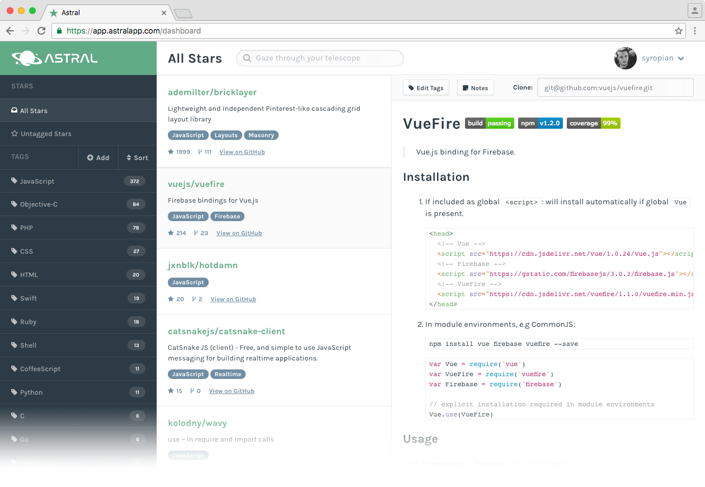

Your GitHub Stars. Organized.
Astral pulls down all of your starred repositories from GitHub, and allows you to organize them using a simple tagging system.

Features
Filter & Search
Astral offers a simple but powerful search interface to quickly find the repository you're looking for.
Readme Viewer
View readmes right inside the app to quickly access repository documentation.
Notes
Have any additional or missing details you want to add to a repository? Notes lets you jot down any extra information you need.
Free (Yes, really!)
Astral is and always will be free to use. It's my way of giving back to the open source community.
Open Source
Interested in contributing to Astral? The entire project is open source, and hosted on GitHub.
What People Are Saying
Finally something that helps you with your GH star addiction.
Astral is an underrated tool that I love. Like Pinboard for code.
 Bryan Irace
@irace
Bryan Irace
@irace
Astral is the app to organize my GitHub stars that I've been waiting for.
Yeeees, just organized and tagged a ton of my GitHub stars with @astralapp. So satisfying.
If you’re as star-happy as I am on GitHub, @astralapp is invaluable for organizing them. So nice...
@astralapp lets you organize starred GitHub repos. Love this kind of app: Simple concept, awesome value.
Browse your GitHub Stars like bookmarks astralapp.com. Waited for something like that for ages.
Finally somebody (@astralapp) did an app to organize your ever increasing @github starred repos.
@astralapp solved my painful problem of 900+ stars. Highly suggest to all developers who store libraries / tools on @github.